前言
在上一篇文章中，我們學會了如何在自己的電腦上使用 TAIDE。這次，我們將透過 Anything LLM，簡單地把你的所有資料當作燃料，啟動 AI 的力量。
本次教學建立在上一篇的基礎之上，如果你還沒跟上，可以參考 AI 焦慮？怕被 AI 淘汰？手把手教你在筆電上使用 TAIDE！(Part 1. LM-Studio)。

相關工具介紹
在開始教學之前，讓我們先了解一下會用到的工具:
- 官方模型 TAIDE-LX-7B-Chat (https://huggingface.co/taide/TAIDE-LX-7B-Chat)
- TAIDE-LX-7B-Chat-GGUF
- 使用 TAIDE 之前必須了解 TAIDE 的使用者規範
- LM Studio: 一個用於開發、微調和部署大型語言模型的平台。
- Anything LLM: 一個強大的工具，可將你的所有資料與大型語言模型連接，實現 RAG (Retrieval-Augmented Generation)。
Anything LLM 操作指南
初始化設置
歡迎介面
順利啟動 Anything LLM 後，你會看到如下的歡迎介面:
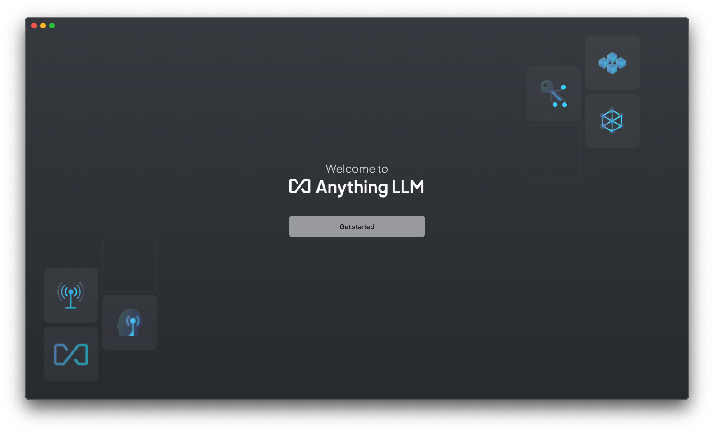
後端選擇
本教學採用 LM Studio，故選擇 LM Studio 繼續。
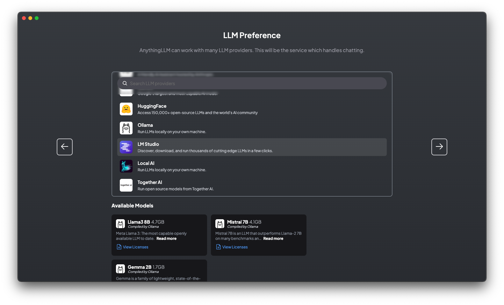
後端設定
主要有三個設置選項:
- 伺服器地址:
http://127.0.0.1:1234/v1(即上一篇 LM Studio Playground 設定的伺服器)
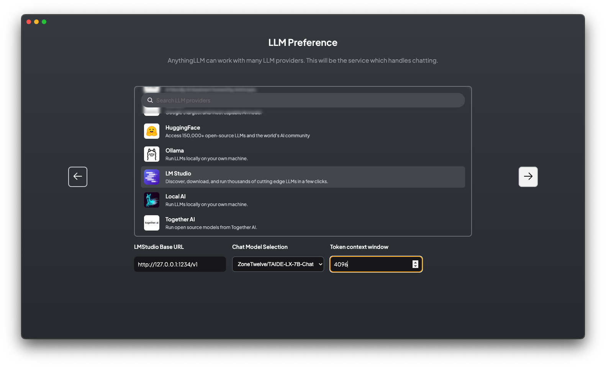
Embedding 設定
Embedding 是為了建立向量資料庫 (Vector Database) 的編碼工具，能夠以提高搜尋效率和精準度的方式運作。
這裡我們選用 AnythingLLM Embedding，如果你有其他偏好的 Embedding model，也可以參考如何建置 Embedding Server。
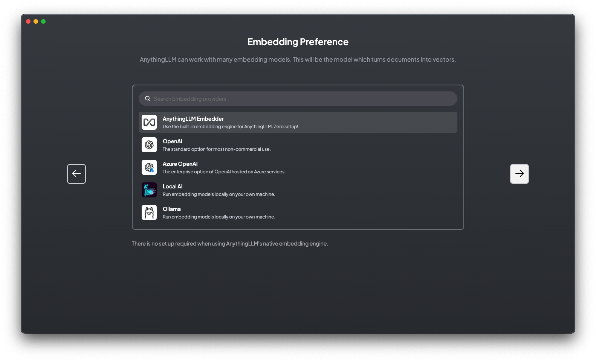
向量資料庫 (Vector Database) 選擇
我們選用 LanceDB，因為它可以在本機零麻煩地設定一個 Vector Database。
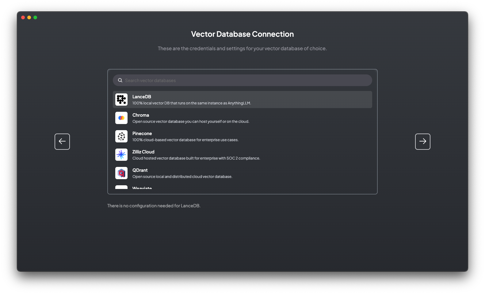
確認設定
在確認頁面，我們可以看到分別選擇了:
- LMStudio 作為大型語言模型的伺服器
- AnythingLLM Embedder 作為詞向量的引擎
- LanceDB 則是向量資料庫，提供比傳統資料庫更高精度的搜尋結果
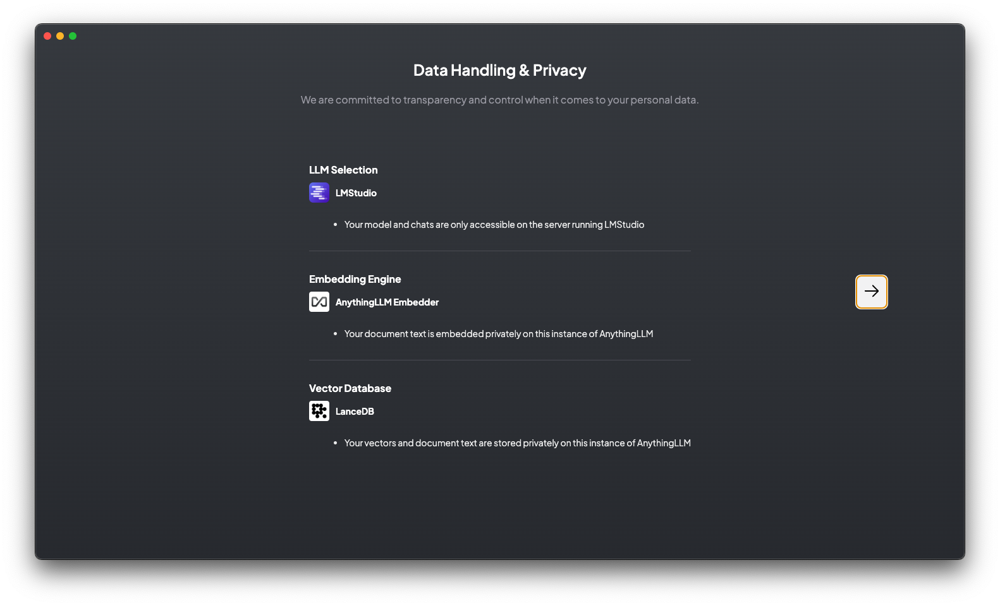
官方調查問卷
你可以根據自己的意願填寫官方調查問卷，不願意填寫的話可以按 Skip Survey。
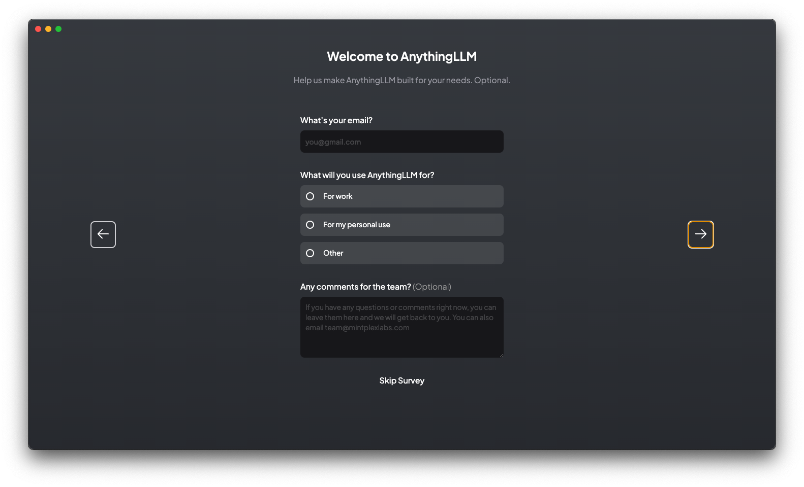
個人工作區操作
建立個人工作空間 (Your Workspace)
這裡可以建立你個人的工作空間，並為其命名。我以 資訊工程學系 為例，你可以根據自己的工作、科系、專題建立不同的工作區。
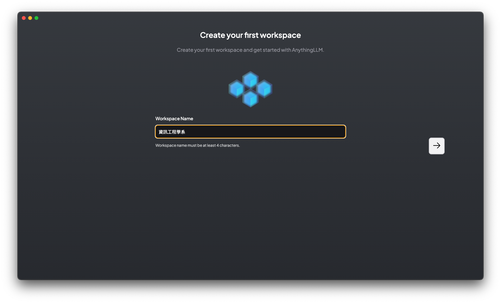
工作區介面
建立好工作區後，你就可以在此與語言模型直接對話。
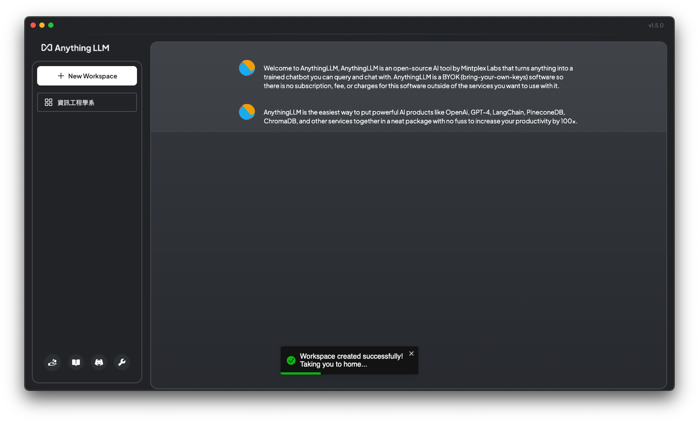
你可以在右側點擊工作區名稱，開啟新的聊天階段 (Chat Session)。
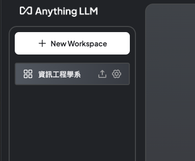
聊天功能區介紹
- 綠色區域: 聊天管理區域
- 藍色括弧: 在本工作區建立新的聊天
- +New Workspace: 建立新的工作區
- 粉色區域: 上傳文件 (RAG 的核心區域)
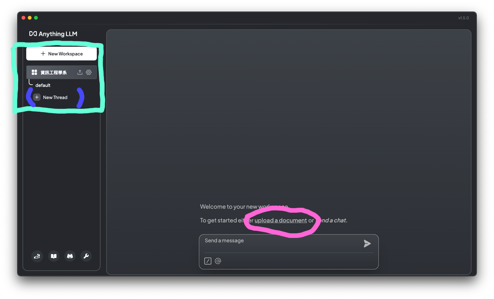
聊天示範
在沒有提供任何文件的情況下，與 AI 對話的效果如下:
-> 在什麼情況下會需要一個機器人像我這樣的來完成這項任務呢？
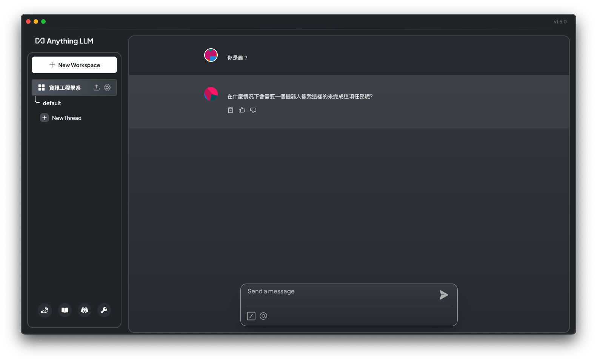
我沒有刻意修改或引導他說話，結果他說出如此深奧的話語，實在太有趣了！ (LOL)
RAG 實戰
還記得剛剛的粉紅色區域嗎？這裡就是 RAG 的魔法展現之處。
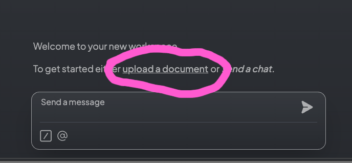
上傳檔案或網頁
直接將檔案拖入左下方的工作區塊(綠色勾勾的 taide.html)，就可以上傳檔案。接著勾選左上方的 taide.html (橘白色圓圈)，就會出現 “Move to Workspace” 的按鈕，點擊它就可以準備將資料移入 Vector Database。
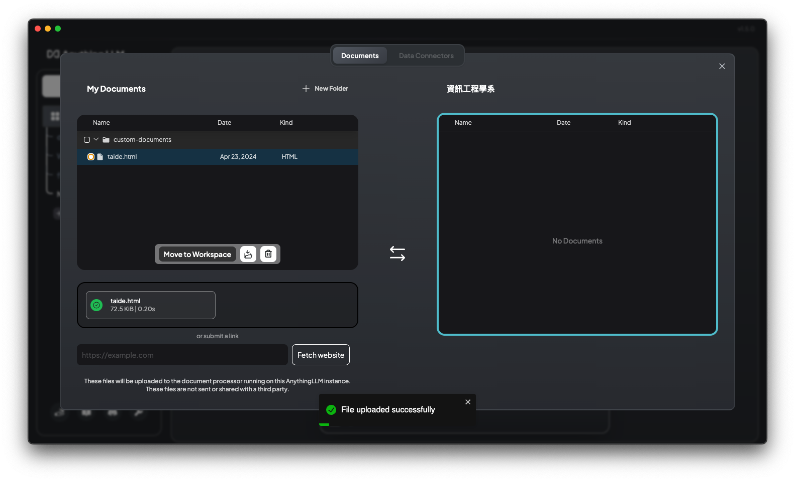
將資料存檔
如果你的畫面如下所示，就代表你即將把上傳的資料轉成詞嵌入並加入到向量資料庫中。
你只需要再按下 Save and Embed 就大功告成了！
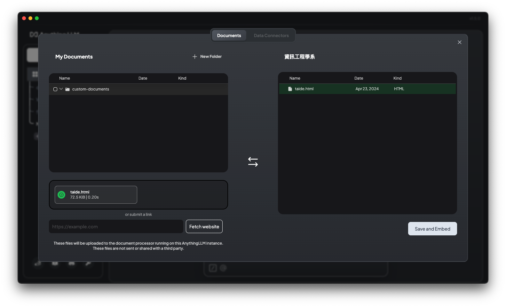
示範 Demo
接下來，我們以 TAIDE 官方資料測試它現在知道什麼！
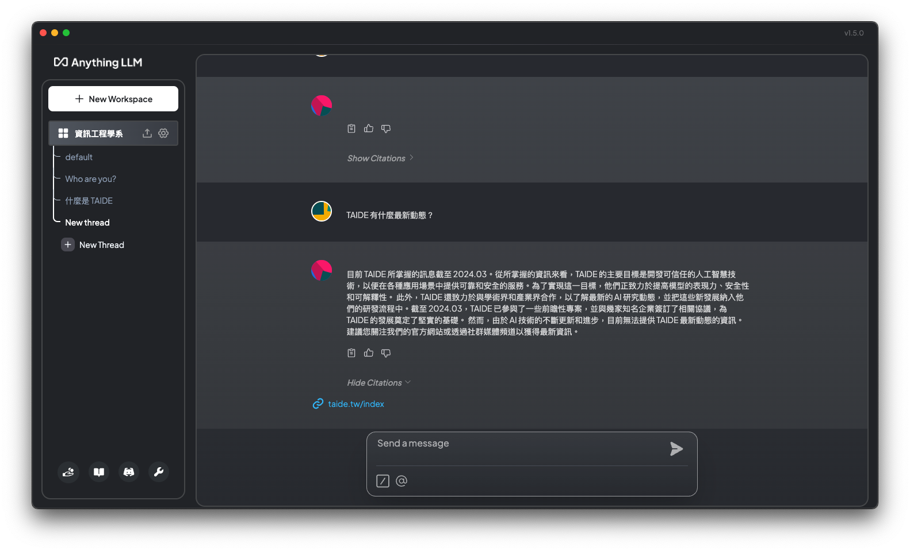
User: TAIDE 有什麼最新動態？
資料連結
如果你有注意到圖中有個 taide.tw/index 的藍色連結，那就是你在這次聊天中用到的資料來源，讓 LLM 能夠給出正確的答案。
儘管提供的資料有限，但 LLM 仍然能夠基於這些資料給出不錯的回答，這正是 RAG 的威力所在。
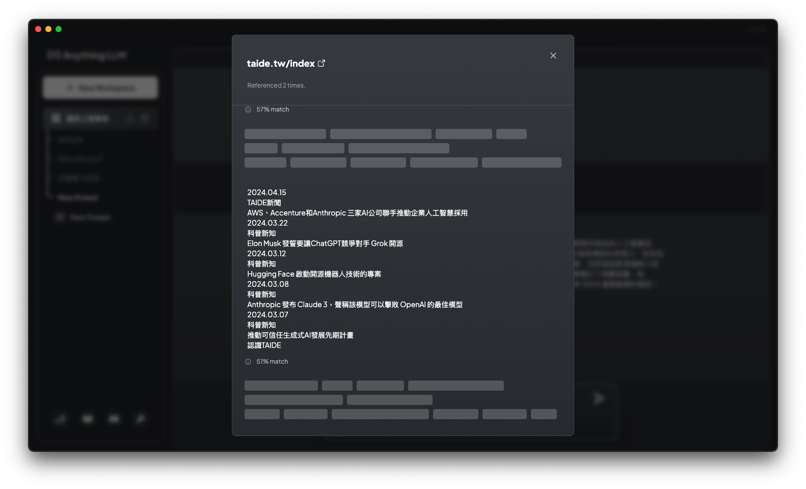
相關連結資料
如果你有注意到上圖中有個 taide.tw/index 的藍色連結，那就是你在這次聊天中用到的資料來源，讓 LLM 能夠給出正確的答案。
這就是 RAG 的威力所在，正確使用它可以大大節省找資料、看資料甚至是總結資料的時間。
總結
透過 Anything LLM 和 LM Studio 的結合，我們可以輕鬆實現 RAG，讓 AI 直接從我們提供的資料中學習和回答問題。這不僅提高了 AI 回答的精準度,也為我們節省了大量尋找和整理資料的時間。
希望這個教學能幫助你掌握 RAG 的基本操作，讓 AI 成為你學習和工作中得力的助手。在下一篇文章中,我們將深入探討更多 RAG 的進階應用，敬請期待吧！
至於 TAIDE 基於 LLaMA 2 好不好用，就取決於各位客官們了。最近我們也可以期待 TAIDE 基於 LLaMA 3 釋出新的模型吧。無論如何，TAIDE 作為一個本地化的中文大語言模型，在推動 AI 民主化無疑邁出了重要的一步。讓我們拭目以待，見證 TAIDE 和其他開源語言模型的蓬勃發展!